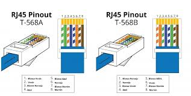

Tipos de cables

UTP
Cables de par trenzado sin blindar (UTP) de 100 ohm y cuatro pares.
STP
Cables de par trenzado blindados (STP) de 150 ohm y cuatro pares.

micras o micrómetros
Cables de fibra óptica multimodo de 62.5/125 µm (micras o micrómetros) y dos fibras.
Normativa de cables de red
Para normalizar la disposición de cables, se utilizan dos estándares, el T568A y T568B, los cuales proporcionan esquemas de cableado para la terminación de los cables de red en enchufes, así como enchufes RJ45 de ocho posiciones.
cable directo en la red
El cable directo de red sirve para conectar dispositivos desiguales, como un computador con un hub o switch. En este caso, ambos extremos del cable deben tener la misma distribución.
cable cruzado en la red
un cable cruzado se utiliza para conectar dos dispositivos del mismo tipo, como por ejemplo un PC a una PC o un switch a otro switch.